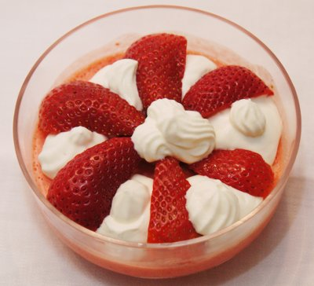

| Zutaten für 6 Personen: | |
| 4 | Eigelb |
| 250 g | Zucker |
| 250 g | Erdbeeren |
| 2 | Zitronen |
| 3 dl | Rahm |
| 1/2 dl | Kirsch |
| 100 g | Löffelbiskuits |
| Schlagrahm zum garnieren | |
Eigelb und 130 g Zucker zu einer sämigen Creme schlagen.
Entstielte Erdbeeren im Mixer pürieren und mit dem Saft der beiden Zitronen mischen.
Rahm sehr steif schlagen.
Erdbeerpüree und Eicreme darunter ziehen.
Restlichen Zucker mit 2 dl Wasser und Kirsch erwärmen.
Die Löffelbiskuits damit tränken.
Nicht zu hohe Biskuitform bis zur 1/3 Höhe mit der Erdbeercreme füllen. Mit getränkten Löffelbiskuits bedecken. Mit Creme auffüllen.
Mit Folie zugedeckt in der Tiefkühltruhe oder im Tiefkühlfach im Kühlschrank gefrieren lassen. Sobald die Creme gefroren ist, in Aluminiumfolie einpacken und bis ca. 15 Minuten vor dem Servieren im Tiefkühler belassen.
Mit steif geschlagenem Rahm und mit Erdbeeren garnieren.
Herbert Eigenmann, Code: ERP
Anfang März 2012 habe ich es erneut zubereitet. Sehr fein. Die pürierten Erdbeeren geben recht viel Masse. Die Löffelbiskuits hätten noch mehr tränken vertragen.
Ich habe am 6.3.2009 die halbe Menge für angeblich 3 Personen zubereitet. Das Dessert reichte immer noch für 8 Portiönchen. Also Vorsicht mit der Menge! Es schmeckte ausgezeichnet. Da Erdbeeren nur in der einen Migros Filiale in Saison waren habe ich das Gericht mit Himbeeren zubereitet. Das Parfait sollte eigentlich nur angefroren sein. Wenn die Resten dann gefroren werden ist es dann am anderen Tag halt pickelhart aber immer noch fein. RE